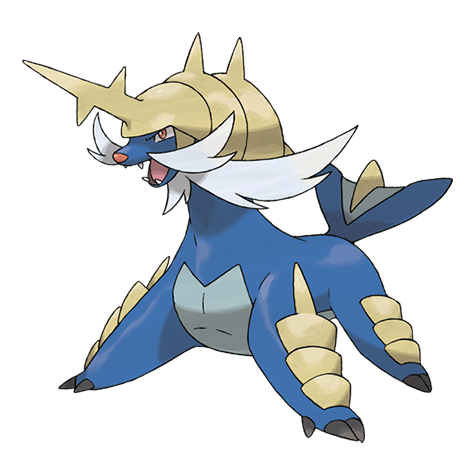
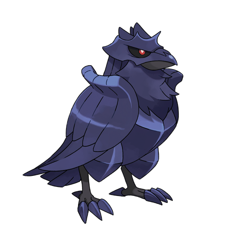
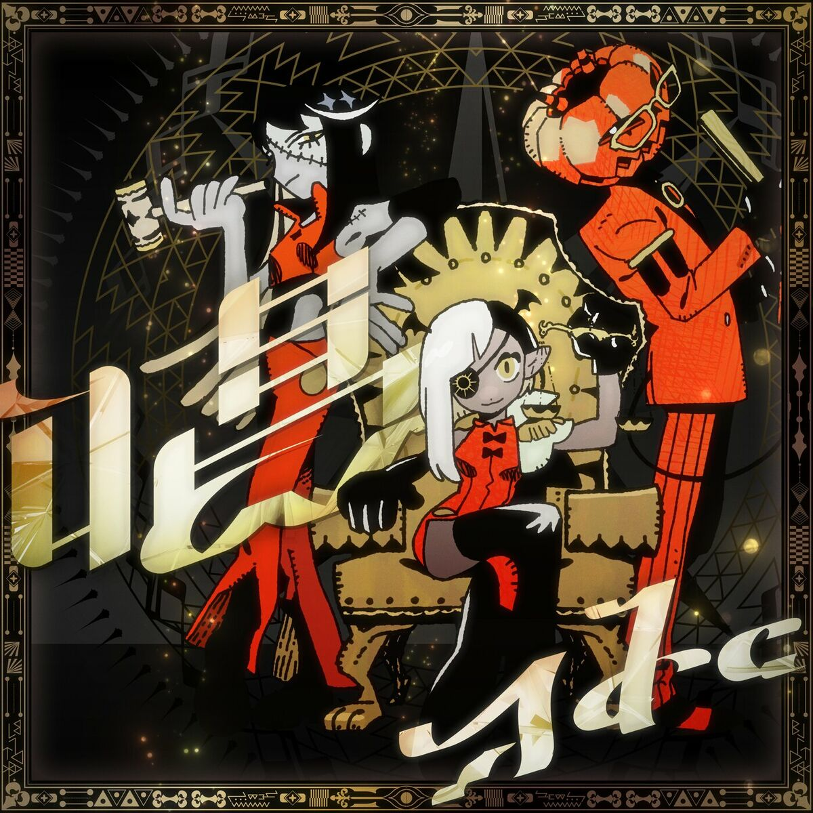
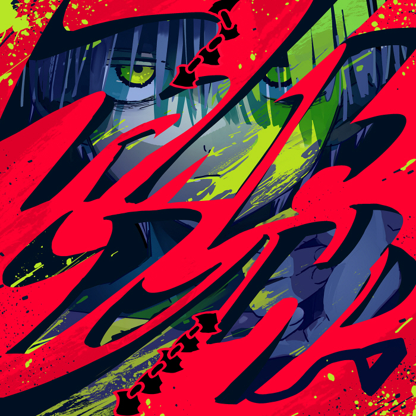
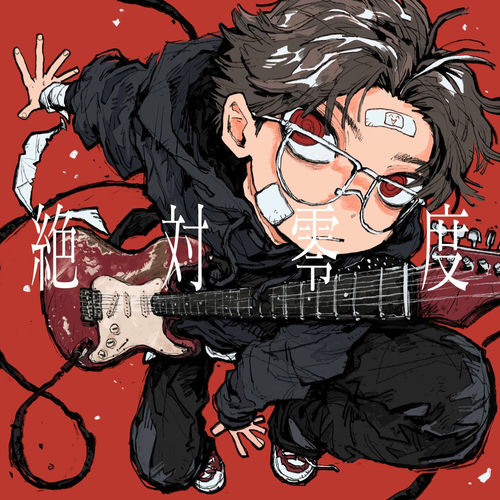

Animes favoritos

Chūnibyō Demo Koi ga Shitai!

Sword Art Online

ReZero
Personajes favoritos

Naofumi

Tamaki

Yuta
Vtubers favoritas
Mi equipo pokémon

Piplup

Samurot

Salamence

Ceruledge

Corviknight

Frosalass
Juegos favoritos
Genshin Impact
Aventura y estética envolvente.
Honkai: Star Rail
Personajes increíbles y lore profundo.
Pokémon
Exploración y nostalgia infinita.
Smash Bros Ultimate
Caos divertido y competencia.
Zelda: Breath of the Wild
Libertad y belleza inmersiva.
Libros que he escrito
- "Entre sombras y escamas" — El canto de los silenciados.
Música favorita

【Ado】Show 唱

【Eve】Fight Song
